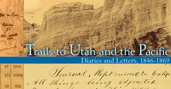
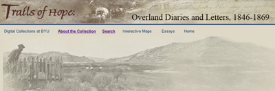

This is an archived copy of History Matters, provided by the Roy Rosenzweig Center for History and New Media. To explore this content in a new interface, visit Who Built America?.

Trails to Utah and the Pacific: Diaries and Letters, 1846–1869
http://memory.loc.gov/ammem/award99/upbhtml/overhome.html
Created and maintained by Lee Library at Brigham Young University, other members of the Utah Academic Library Consortium, and the Library of Congress, Washington, D.C.
Reviewed Aug. 15-Sept. 15, 2004.
Trails of Hope: Overland Diaries and Letters, 1846–1869
http://overlandtrails.lib.byu.edu
Created and maintained by Lee Library at Brigham Young University and other members of the Utah Academic Library Consortium.
Reviewed Aug. 15-Sept. 15, 2004.
The movement of millions into the American West is the most closely studied migration in history. Increasingly, it is also the most digitized. Trails to Utah and the Pacific—a joint endeavor of the Library of Congress’s American Memory project, the Utah Academic Library Consortium, and other western archival institutions—represents the most sophisticated Internet-based effort yet to bring the writings of such pioneers (and some of the published guides and maps they relied upon) to a broader audience. This archive of 23 handwritten diaries from the Mormon Trail and 20 from other routes, 43 maps, 82 images, and 7 guides succeeds remarkably well in creating a rich resource equally valuable to academics and laypersons.

Trails to Utah and the Pacific is actually one of two linked user interfaces created by the aforementioned partnering institutions that draw upon the same source material; the other—served by Brigham Young University and bearing the Mormon-inflected title of Trails of Hope—offers greater search capacity within the diaries. The Library of Congress version, however, also facilitates queries across American Memory's vast holdings. Both provide full-text searchable transcriptions and page images for every object; Trails of Hope, though, permits side-by-side views of text and page images. Comparison of the originals and transcripts for this review indicates a near-flawless rendering of the content. Fairly or not, critics have accused Church of Jesus Christ of Latter-day Saints (Mormon) officials of manipulating the historical record to buttress current church doctrine. Searching within Trails of Hope, however, for the words “coffee” and “tea” reveals forty-eight examples of Saints consuming these beverages despite Joseph Smith’s revelations—suggesting no sanitizing hand in the transcribing. Trails of Hope also features contextual essays that, if shying from associating the Mormon exodus with the larger American religious experience, as does R. Laurence Moore’s Religious Outsiders and the Making of Americans (1986), nevertheless situate the collection within Mormon and western history.

Trails of Hope standardized metadata for place and personal names. Therefore, searching for “John Payne” (an African American who traveled to Montana with a white family in 1865) will produce all references to him in any document, even if the diarist wrote only “John” or “Payne.” Likewise, misspellings in the originals will not thwart searches. Finally, Trails of Hope allows page-level searches for nine conceptual themes (Children, Diseases, etc.) that reflect many trail scholars' recent preoccupations. Collectively, these finding aids generate meaningful new research and teaching opportunities impossible without digitization.
Only two facets of these sites disappoint. First, digital collections literature speaks fondly of “contextual mass,” defined by the Council on Library and Information Resources' Abby Smith as “enough related items” within a searchable database to allow meaningful queries through “comparisons of phenomena” (http://www.clir.org/pubs/reports/pub101/contents.html). With so few diaries, the sites cannot yet provide such a context for interpretation. Second (and less significant), although the Web sites strive to identify individuals mentioned in the diaries, neither, surprisingly, fully utilizes the biographic resources of the filiopietistic Mormon community. Many women appear in the Trails to Utah and the Pacific and the Trails of Hope index only under their husbands' names (for example, “Sister Hyder”). Cross-referencing the biographical encyclopedia Pioneer Women of Faith and Fortitude (1998) by the Daughters of Utah Pioneers with the Web sites permits identification of many of those unnecessarily obscured. Nonetheless, these sites outshine many similar projects.
Fritz Umbach
John Jay College
City University of New York
New York, New York